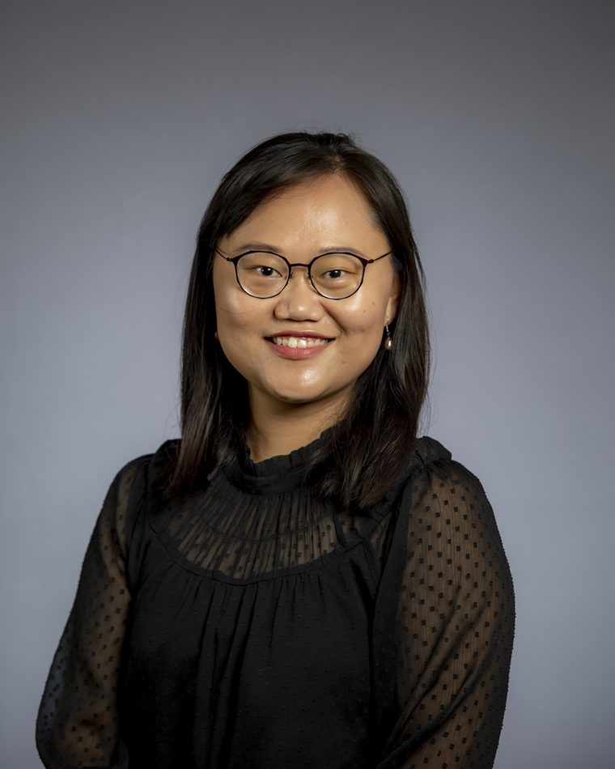
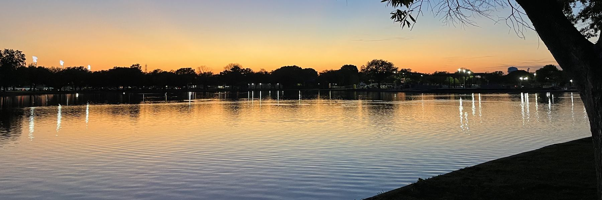

Who works here

Huiyun Wu, Ph.D.
Assistant Professor of Civil and Environmental Engineering. Her work runs from field sampling at treatment plants through molecular and sequencing methods to the models and risk assessments that utilities and regulators use.
She joined Washington State University in 2024, after a postdoctoral appointment at Tulane University with Tiong Gim Aw and a research fellowship at the U.S. EPA with Marirosa Molina. She completed her doctorate and master's at Michigan State University with Irene Xagoraraki, and passed the Principles and Practice of Engineering examination in 2020.

The laboratory
An 840 square foot biosafety level 2 environmental virology laboratory in the PACCAR Environmental Technology Building, a LEED Gold facility. Computation runs on the university Kamiak cluster, where the group holds a dedicated node.
Oxford Nanopore P2 Solo · Qiagen QIAcuity digital PCR · Bio-Rad CFX96 · Agilent TapeStation 4150 · BSL-2 and BSL-2+ culture facilities.
Collaborators
Irene Xagoraraki, Michigan State University · Joan Rose, Michigan State University · Marirosa Molina, U.S. EPA · Melissa Gonzales, Tulane University · Tiong Gim Aw, Tulane University.